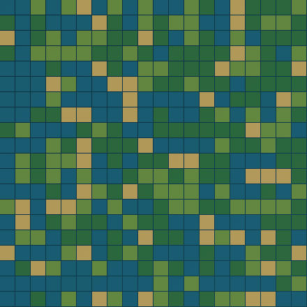
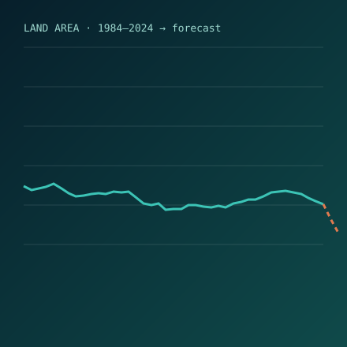
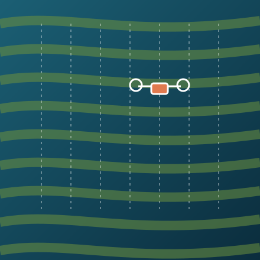
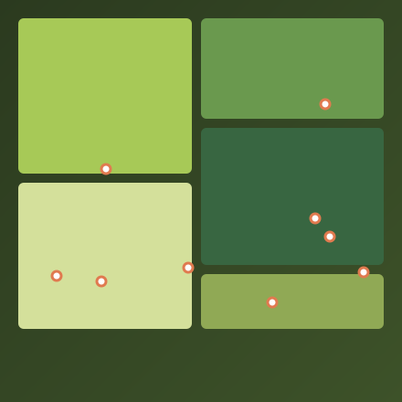
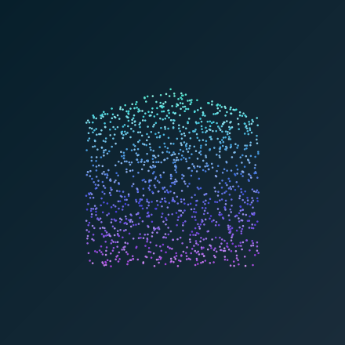
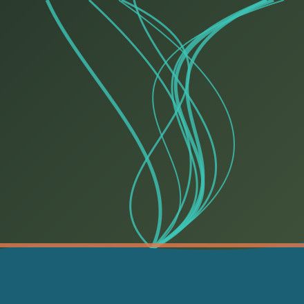
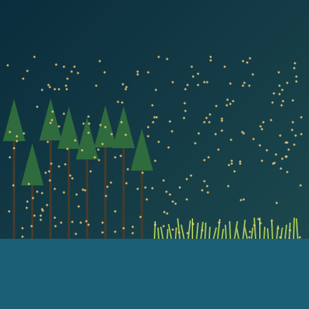
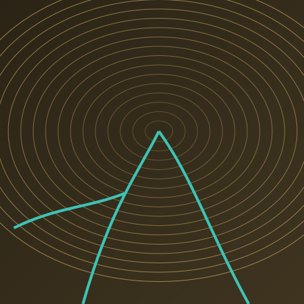

Ph.D. Geography
Minor in Applied Statistics · Louisiana State University
Ph.D. Student · Geography · Louisiana State University
I use satellite time series, multispectral and LiDAR drones, field surveys, and explainable AI to map coastal wetlands, measure land loss, and forecast how Louisiana's coast will change.
Illustration only, not real data.

About
I'm a Ph.D. student in Geography, minoring in Applied Statistics, at Louisiana State University. I work in the TiGERS Lab with Dr. Xuelian Meng. My dissertation uses remote sensing and explainable AI to monitor coastal land loss and the resilience of Phragmites australis (Roseau cane) in Louisiana.
I trained as a Geomatics Engineer at Kathmandu University and taught surveying and geodesy there. Now I work on federally funded USDA/APHIS research, fly multispectral and LiDAR drones over coastal marshes, and build models that fill gaps in, and forecast, decades of satellite records.
Minor in Applied Statistics · Louisiana State University
Thesis: Four decades of land-area change & forecasting in coastal Louisiana
Kathmandu University · Government of Nepal Fellowship
Research themes
My research spans scales, from centimeter-level drone imagery to forty years of satellite records.
Mapping Roseau cane habitat, dieback, and recovery with deep learning on Landsat and Sentinel-2 time series.
Filling gaps in and forecasting four decades of land-area change, and explaining its hydro-environmental drivers.
Collecting multispectral, RGB, and LiDAR drone data, validated with RTK GNSS and field plots, for fine-scale ecology.
Assessing compound flooding with GIS and hydrologic analysis, and evaluating nature-based solutions with communities.
Study sites
Click a site to fly to it on the map. Locations are approximate.
Featured projects
Filter projects by method. Click an image to enlarge it.

Satellite · Deep learning · USDA/APHIS
Automated Landsat and Sentinel-2 workflows (Python, Google Earth Engine, ArcGIS Pro) using Random Forest, SVM, and U-Net, reaching up to 95% accuracy. CCDC and multi-year maps track dieback, persistence, and first and last occurrence.

Time series · Forecasting · M.S. thesis
A semi-automated Landsat framework for annual and monthly land area in four coastal systems (1984–2024). GAMs with lagged storm effects, Kalman versus Gaussian Process gap filling, and SARIMA, Prophet, XGBoost, and neural-net forecasts.

UAV · Multispectral · Field validation
RGB and 10-band multispectral drone surveys at Rockefeller, the Mississippi River Delta, Atchafalaya, and Vermilion. Vegetation indices, fine-scale classification, fragmentation, and land–water change, validated with RTK GPS and vegetation plots.

UAV · Machine learning · Agriculture
Led drone surveys across six farms. Combined multispectral imagery with biomass samples and RTK data to model biomass, forage condition, species composition, and protein content.

Photogrammetry · Point clouds · 3D
Nadir and oblique multispectral UAV imagery processed in Agisoft Metashape into georeferenced dense point clouds for an LSU Civil Engineering digital twin.

GIS · Hydrology · Nature-based solutions
Hydrologic, terrain, land-cover, and site-selection analysis for the proposed Slidell levee system, evaluating detention ponds, marsh terraces, sills, and breakwaters with the Bayou Liberty Association.

UAV LiDAR · Terrestrial LiDAR · Ecology
Designed and tested UAV flight plans for multispectral and LiDAR collection in the Lake Pontchartrain Basin, and ran terrestrial LiDAR field surveys for habitat classification.

Hydrology · Arc Hydro · Nepal
Delineated drainage networks and catchments, modeled streamflow, and combined WorldClim precipitation with terrain to estimate hydropower potential (Energy Development Council Nepal).
Publications & talks
Search by title, year, or topic, or filter by status. Use the copy button to grab a citation.
Experience
Dept. of Geography & Anthropology, Louisiana State University
Leads satellite and UAV research on Roseau cane habitat, coastal land loss, pasture monitoring, digital twins, and pine–marsh ecotones.
LSU Coastal Ecosystem Design Studio
Assessed compound flooding and nature-based solutions for the proposed Slidell levee system. Built maps and StoryMaps and worked with ADCIRC/SMS.
Dept. of Geomatics Engineering, Kathmandu University
Taught topographic surveying and physical and satellite geodesy, supervised AI tree-detection projects, and trained 60 students at survey camps.
Energy Development Council Nepal
Hydropower potential estimation with Arc Hydro, streamflow modeling, and WorldClim precipitation.
Toolkit
Languages: Nepali (native) · English (fluent) · Hindi (intermediate)
Contact
I'm open to research collaborations, postdoctoral and industry roles, and conversations about remote sensing, GeoAI, and coastal resilience.